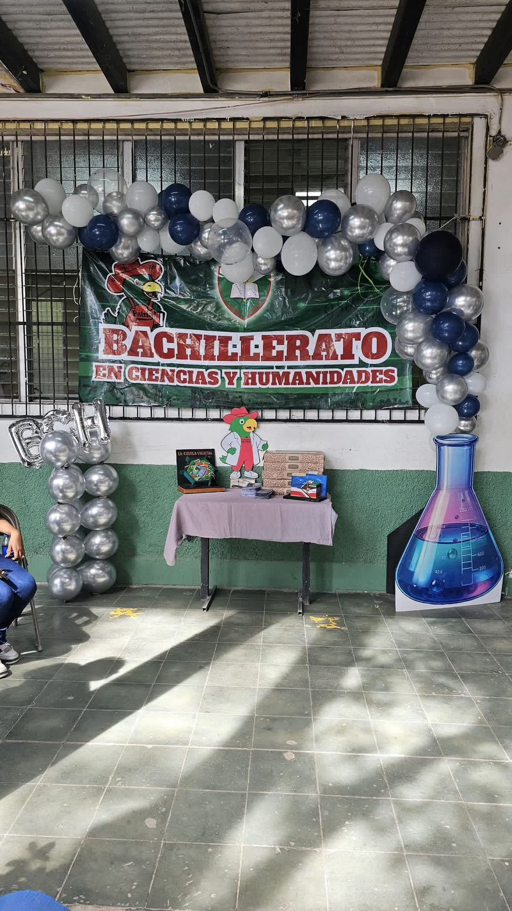

El Bachillerato en Ciencias y Humanidades es una modalidad educativa integral que capacita a los estudiantes en áreas de ciencias naturales (matemáticas, física, química) y disciplinas sociales, humanísticas, y de expresión oral y escrita. Prepara para estudios universitarios, fomentando el pensamiento crítico y técnico, con opciones tanto presenciales, como el ITEE y el ITEEC, como la modalidad virtual gratuita ofrecida por la Secretaría de Educación en Honduras.Características y Enfoque:Formación Integral: Combina la rigurosidad científica con el entendimiento humano y cultural. Preparación Universitaria: Diseñado para brindar la base necesaria para cualquier carrera superior. Áreas de Estudio: Matemáticas, física elemental, química, ciencias sociales, historia y literatura. Competencias: Desarrolla el pensamiento crítico, la investigación y la expresión oral y escrita.